Manuel — Réception produits
Pour qui ? L’équipe opérations, et toute personne qui réceptionne des appareils de reprise.
Durée moyenne par produit : 2 à 5 minutes.
Ce qu’il vous faut : un téléphone ou une tablette, un mètre, l’accès « Réception produits » sur l’intranet.
Les images grises sont provisoires (numéro et contenu attendu). Les captures marquées « ancienne interface » montrent la version précédente des écrans : le texte du manuel fait foi. Voir la liste des images à fournir.
Le principe en une image
On réceptionne un produit à la fois, toujours dans le même ordre, puis on passe au suivant :
📷 Photos → 🔢 N° de série → 🏷️ Marque et modèle → 📏 Mesures → 📋 État → ✅ Produit complet
│
┌──────────────────────── produit suivant ◄──────────────┘
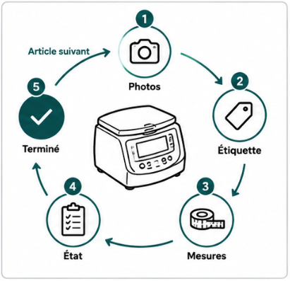
🖼️ Image 0 — Schéma : les 5 étapes d’un produit en boucle (photos, n° de série, marque et modèle, mesures, état), puis « Produit complet » → produit suivant.Chaque produit complet part tout seul dans Airtable (son unité, avec toutes ses photos). À la fin, on touche Terminer la réception : c’est fini, il n’y a pas d’autre étape.
Sommaire
1. Avant de commencer
✅ |
À vérifier |
|---|---|
🚚 |
Dans Airtable, le Statut logistique de l’opération de reprise est « Appareils reçus » (voir § 4). |
🔋 |
Téléphone ou tablette chargé. |
🔒 |
Adresse en https (sinon la caméra ne s’ouvre pas). |
📷 |
Autoriser la caméra la première fois que le navigateur le demande. |
💡 |
Un endroit bien éclairé, sans reflet direct sur les étiquettes. |
📏 |
Un mètre à portée de main. |
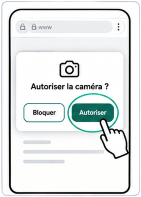
🖼️ Image 1 — Capture de la fenêtre du navigateur « Autoriser l’accès à la caméra ? » avec le bouton « Autoriser » entouré.2. Ouvrir « Réception produits »
Ouvrez l’intranet.
Touchez la tuile 📦 Réception produits.
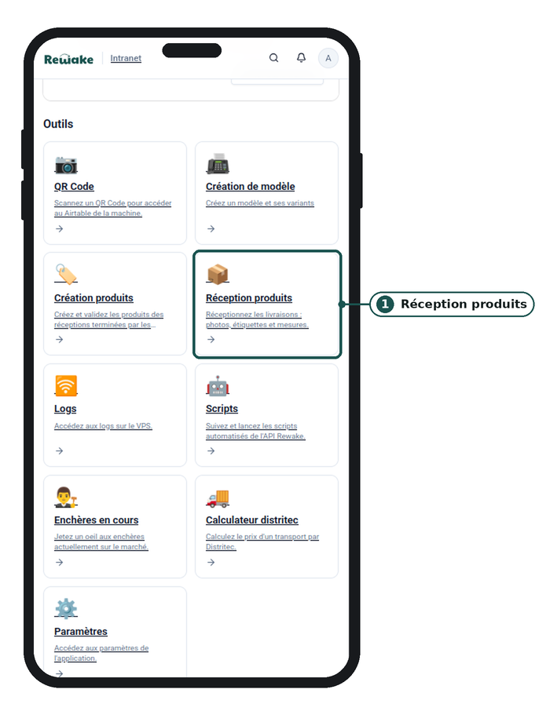
Image 2 — ① Réception produits.💡 Dès que vous touchez un bouton, une barre de chargement apparaît en haut de l’écran (et « Chargement… » si cela prend plus d’un instant). Pas besoin de toucher deux fois.
3. L’accueil : trois onglets
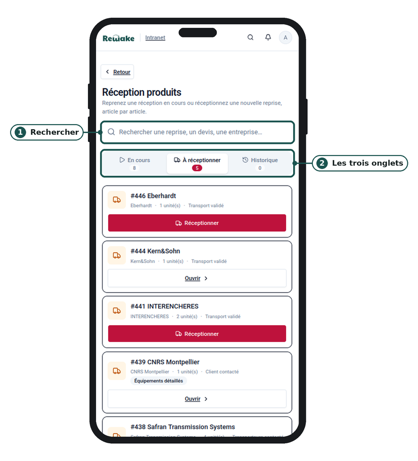
Image 3 — ① Rechercher · ② Les trois onglets.Onglet |
Ce que vous y trouvez |
Bouton |
|---|---|---|
▶ En cours |
Les réceptions ouvertes et pas terminées. |
Reprendre (ou Commencer si rien n’est encore reçu) |
🚚 À réceptionner |
Les reprises dont le Statut logistique est « Appareils reçus » dans Airtable, pas encore réceptionnées ici. |
Réceptionner (ou Ouvrir) |
🕓 Historique |
Les réceptions terminées ou annulées. |
Voir |
🔎 La barre de recherche (« Rechercher une reprise, un devis, une entreprise… ») filtre les trois onglets à la fois. Le nombre de chaque onglet se met à jour.
L’application se souvient de l’onglet que vous avez choisi.
4. Commencer une nouvelle réception
Étape 0. Quand le matériel arrive, dans Airtable, passez le Statut logistique de l’opération de reprise à « Appareils reçus ». Sans ça, la reprise n’apparaît pas dans l’application (une aide ⓘ le rappelle en bas de la liste). Une reprise dont le Statut opérationnel est « Inventaire terminé » n’apparaît pas non plus.
Étape 1. Onglet 🚚 À réceptionner : trouvez la reprise (tapez le nom ou l’entreprise dans la recherche).
Étape 2. Touchez Réceptionner.
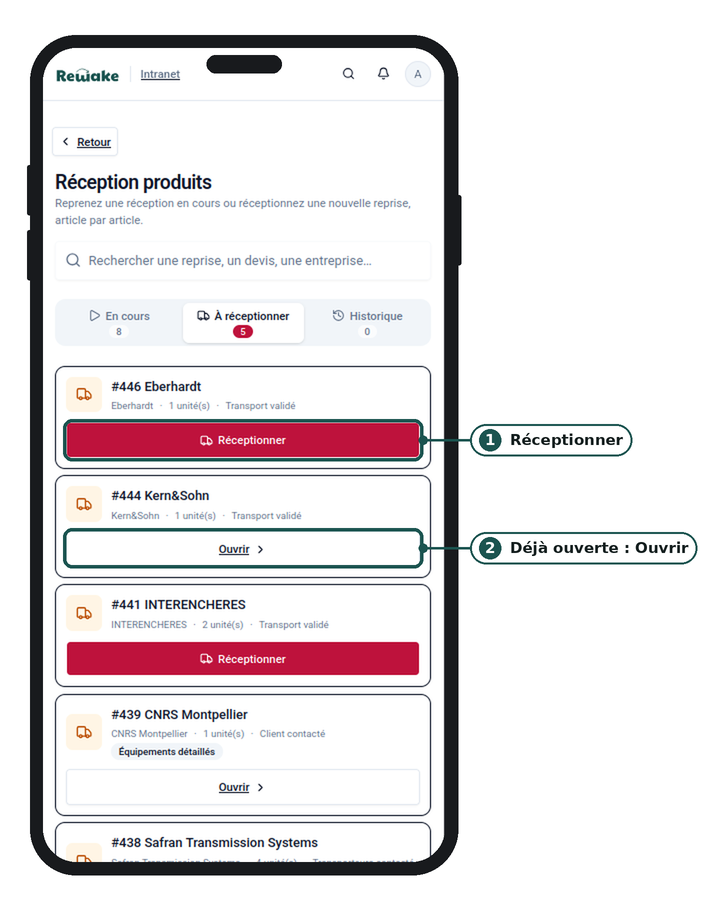
Image 4 — ① Réceptionner · ② Déjà ouverte : Ouvrir.ℹ️ Si une réception est déjà ouverte pour cette reprise, le bouton s’appelle Ouvrir : il vous y emmène, rien n’est créé en double.
Étape 3. La page de la réception s’ouvre : la liste des produits attendus. Touchez un produit marqué « À recevoir · touchez pour photographier » : la caméra s’ouvre. La première photo le compte comme reçu.
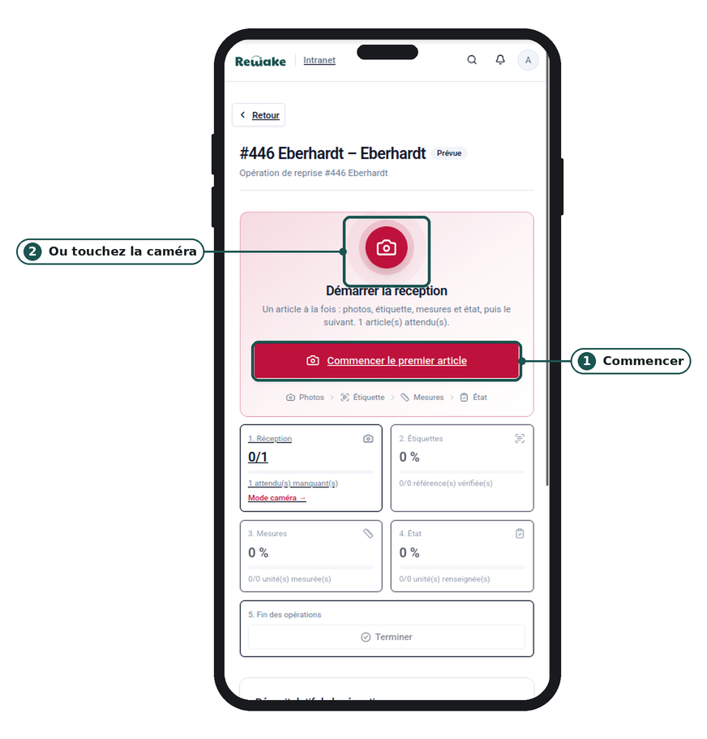
Image 5 — ① Commencer · ② Ou touchez la caméra. (Ancienne interface : ce bouton n’existe plus, touchez directement un produit de la liste.)5. Prendre les photos d’un produit (caméra)
La caméra s’ouvre en plein écran. En haut : le nom du produit attendu et les 5 étapes (vous pouvez en ouvrir une en la touchant). Touchez le nom du produit pour voir ce que dit la reprise (photos du client, marque, modèle, n° de série, état annoncé, dimensions…).
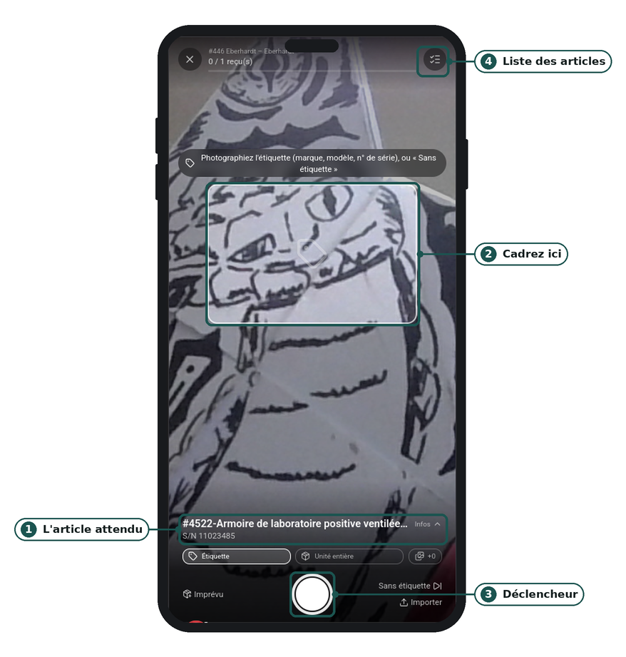
Image 6 — ① L’article attendu · ② Cadrez ici · ③ Déclencheur · ④ Liste des articles (ancienne interface : la liste n’est plus dans la caméra).5.1 Photo de l’étiquette 🏷️
Cadrez l’étiquette (plaque signalétique) dans le cadre rectangulaire.
Touchez le déclencheur (gros rond blanc).
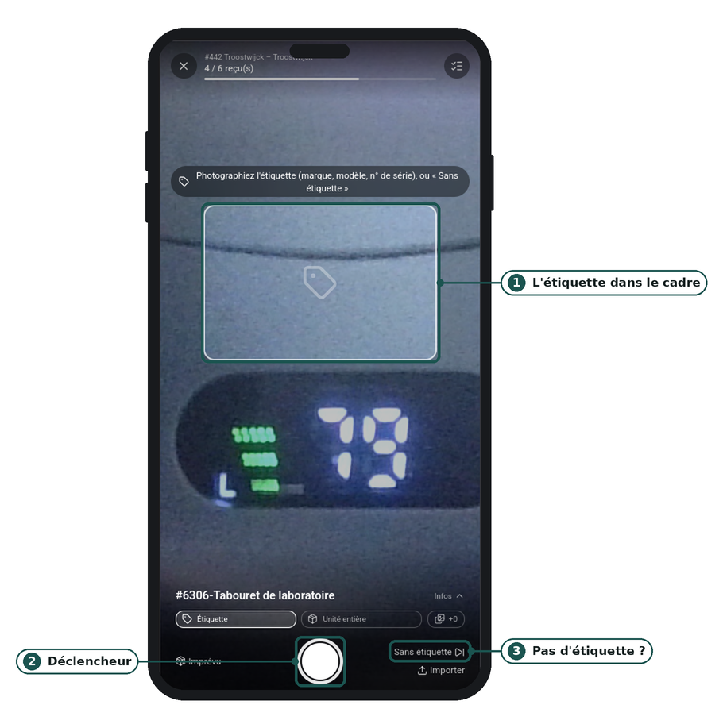
Image 7 — ① L’étiquette dans le cadre · ② Déclencheur · ③ Pas d’étiquette ?. (Ancienne interface.)Pas d’étiquette sur l’appareil ? Touchez Sans étiquette ⏭.
La lecture de l’étiquette (marque, modèle, n° de série) se fait toute seule en arrière-plan : continuez sans attendre.
5.2 Photo du produit entier 📦
Reculez pour avoir tout l’appareil à l’écran.
Touchez le déclencheur.
Cette photo est obligatoire : sans elle, le bouton reste sur « Photographiez le produit entier pour continuer ».
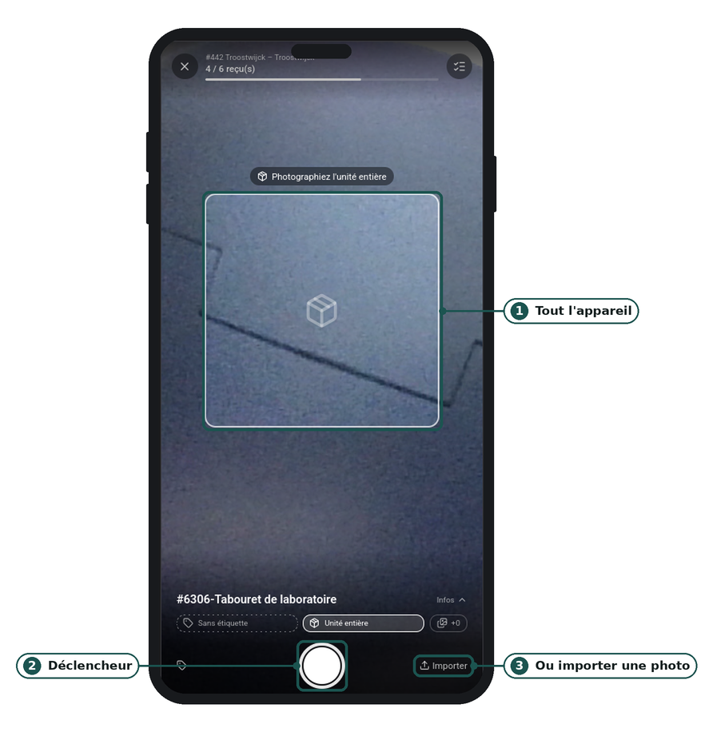
Image 8 — ① Tout l’appareil · ② Déclencheur · ③ Ou importer une photo. (Ancienne interface.)5.3 Photos facultatives
Touchez +N : des pastilles apparaissent (Branchement, Dessus, Face, Côté gauche, Côté droit, Arrière, Intérieur, Tension, Autre). Touchez-en une, puis le déclencheur. Une pastille prise devient ✓.
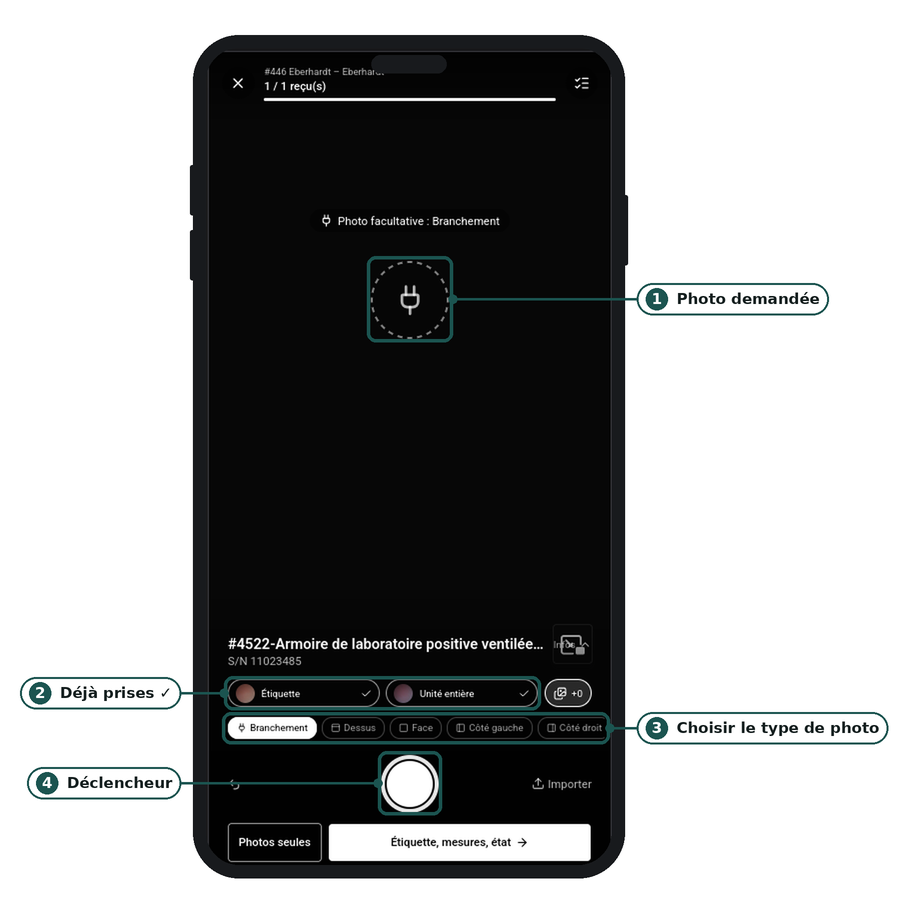
Image 9 — ① Photo demandée · ② Déjà prises ✓ · ③ Choisir le type de photo · ④ Déclencheur. (Ancienne interface.)💡 Prenez ce qui est utile pour l’appareil : l’intérieur d’un frigo oui, celui d’une pipette non. La plaque arrière aide souvent à trouver la référence.
5.4 Passer à la suite
Touchez Suivant : n° de série → (bouton blanc en bas). Attendez la fin de « Enregistrement… » si une photo est encore en cours d’envoi.
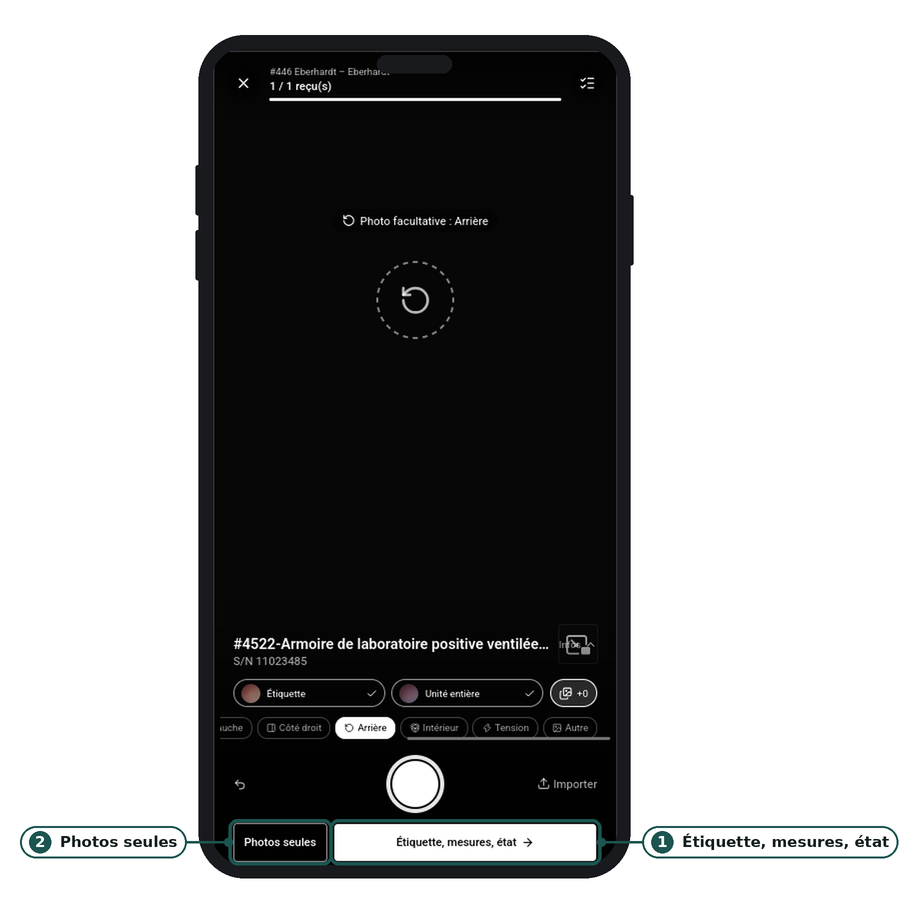
Image 10 — ① Étiquette, mesures, état · ② Photos seules. (Ancienne interface : un seul bouton maintenant, « Suivant : n° de série ».)Les autres boutons de la caméra
Bouton |
Rôle |
|---|---|
⬆ Importer |
Choisir une photo déjà prise (galerie, ordinateur) au lieu de photographier. |
Étiquette / Produit entier |
Reprendre cette photo (« · reprendre » une fois prise). |
✕ (en haut à gauche) |
Revenir à la liste des produits. |
6. Compléter le produit, étape par étape
Après les photos, chaque étape s’ouvre l’une après l’autre. En haut : le nom du produit, le compteur 3/5 et les 5 étapes (Photos, N° de série, Variante, Mesures, État) : elles se cochent ✓ quand elles sont faites, et on peut en rouvrir une en la touchant pour corriger.
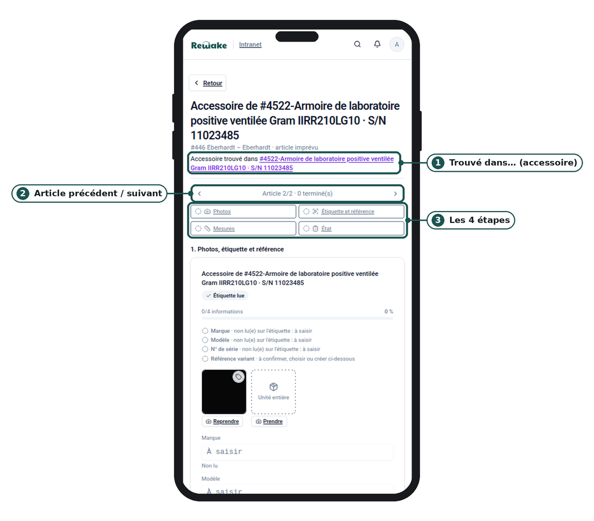
Image 11 — ① Trouvé dans… (accessoire) · ② Article précédent / suivant · ③ Les 4 étapes. (Ancienne interface.)6.1 N° de série
Le numéro lu sur l’étiquette est pré-rempli. Pendant la lecture, « Lecture de l’étiquette… » s’affiche (Saisir sans attendre pour taper tout de suite). Sous le champ, une petite ligne dit d’où vient le numéro :
Mention |
Que faire |
|---|---|
Lu sur l’étiquette |
Vérifier d’un coup d’œil. |
Lu sur l’étiquette (à bien vérifier) |
Comparer avec l’appareil, corriger si besoin. |
Lu par l’IA sur les photos / Indiqué dans la reprise |
Vérifier sur l’appareil. |
✨ L’IA lit : … — Utiliser |
L’IA a lu un autre numéro : comparer, toucher Utiliser si c’est juste. |
Identique à la reprise. (vert) : tout va bien. Différent de la reprise (orange) : vérifiez que c’est le bon produit ; le bouton devient Valider ce numéro quand même.
Touchez Valider le n° de série. Pas de numéro du tout ? Ce produit n’a pas de n° de série (noté « NA »).
Photo illisible ? Photo floue ? Reprendre l’étiquette. Si une nouvelle photo montre un autre numéro, l’étape est à valider de nouveau.
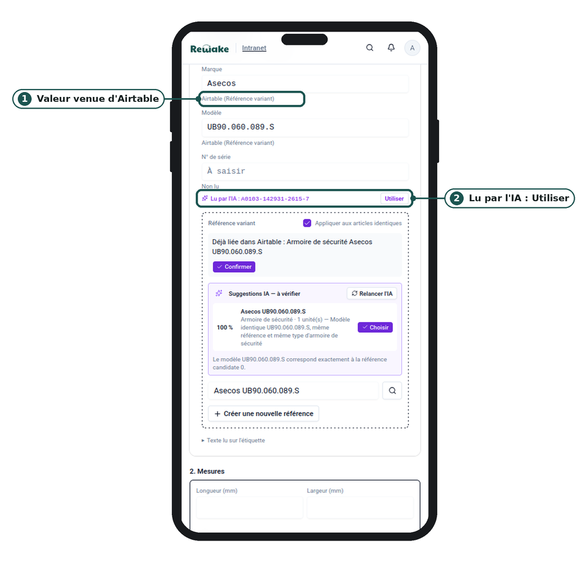
Image 12 — ① Valeur venue d’Airtable · ② Lu par l’IA : Utiliser. (Ancienne interface.)💡 Le n° de série est souvent écrit SN: ou S/N sur l’étiquette.
6.2 Marque et modèle (la Référence variant)
C’est l’étape la plus importante : elle relie l’appareil à sa fiche Airtable. La photo de l’étiquette et ce qui y a été lu (« Sur l’étiquette ») restent affichés pour comparer. Quatre cas :
Cas A — Déjà reliée dans Airtable (fréquent pour les reprises) → Vérifiez que c’est bien l’appareil, puis touchez ✓ Oui, c’est bien ce produit (sinon Non, ce n’est pas ce produit).
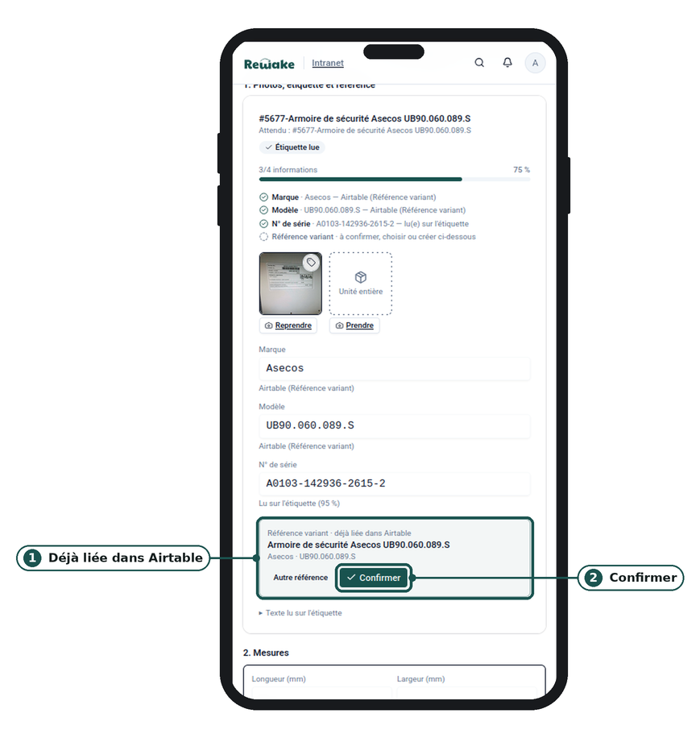
Image 13 — ① Déjà liée dans Airtable · ② Confirmer. (Ancienne interface.)Cas B — Proposé par l’IA → Pendant « Recherche de la référence… », l’IA lit les photos. Les références qui existent dans Airtable s’affichent avec un % sûr. Touchez la bonne (en général la première), puis Choisir cette référence.
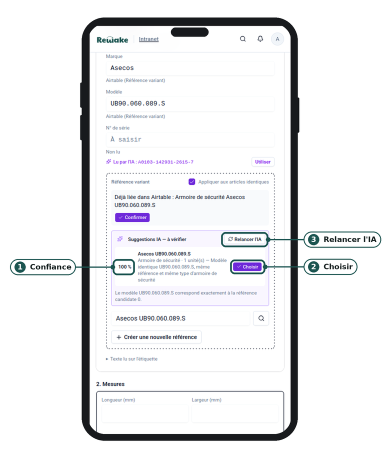
Image 14 — ① Confiance · ② Choisir · ③ Relancer l’IA. (Ancienne interface.)💡 Relancer redemande une proposition (par exemple après une nouvelle photo). L’icône ✨ dit quelle IA a répondu et quand. « Correspondances trouvées (sans IA) » : l’IA n’a pas répondu, ce sont des correspondances simples.
Cas C — Chercher soi-même → Ce n’est pas proposé : chercher dans Airtable. Tapez un nom, un numéro ou les deux (ex. « rotor 2424 »), puis touchez la bonne version et Choisir cette référence. Autre version crée une nouvelle version d’un modèle existant.
Cas D — Créer une nouvelle référence (seulement si rien ne correspond)
Introuvable : créer une nouvelle référence (ou touchez la proposition orange « Nouvelle référence : sera créée dans Airtable », puis Vérifier puis créer la référence).
Vérifiez Marque, Modèle, Type d’équipement (les choix « proposé par l’IA » sont pré-remplis). Une marque ou un type absent d’Airtable est marqué « nouveau dans Airtable » et demande une confirmation : vérifiez l’orthographe !
Ajouter une variante : seulement si le modèle existe en plusieurs versions (volume, tension…).
Accessoire ? Cochez C’est un accessoire et choisissez les modèles avec lesquels il est compatible.
Relisez « Sera créé dans Airtable », puis Créer dans Airtable.
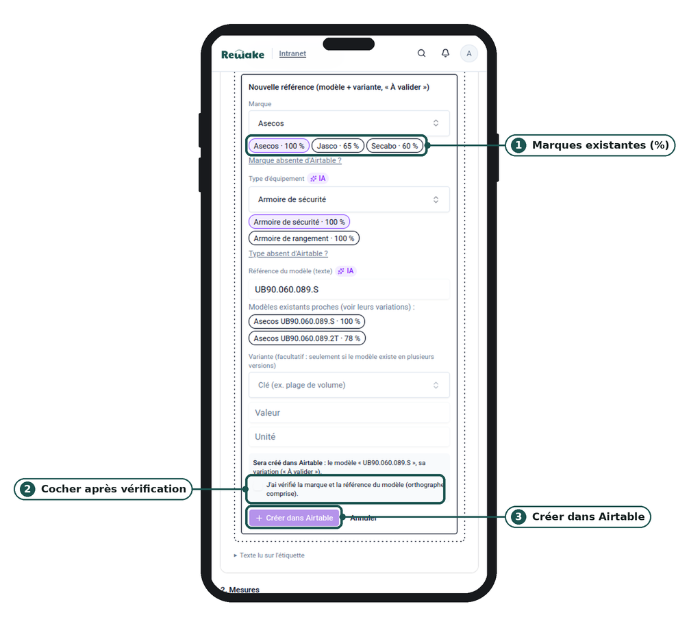
Image 15 — ① Marques existantes (%) · ② Cocher après vérification · ③ Créer dans Airtable. (Ancienne interface : il n’y a plus de case à cocher.)⚠️ Ne créez pas de doublon : si l’application signale que le modèle existe déjà dans Airtable, touchez Utiliser … plutôt que d’en créer un nouveau.
ℹ️ La nouvelle référence est créée « À valider » ; le commercial vérifie ensuite sa fiche dans l’outil Revue des produits (cela ne bloque pas la réception).
💡 La référence choisie est reportée toute seule sur les produits identiques (même marque et même modèle) de la réception.
6.3 Mesures 📏
Champ |
Obligatoire ? |
|---|---|
Longueur, Largeur, Hauteur (mm) |
Oui |
Poids (kg) |
Non, facultatif |
Valeurs en violet pointillé « connu (Airtable) » : ce sont les dimensions de la fiche. Mesurez rapidement pour vérifier, puis touchez Confirmer les valeurs connues (ou corrigez le champ).
Entrée sur le clavier passe au champ suivant.
Appareil impossible à mesurer ? Activez Mesure impossible.
Touchez Valider les mesures.
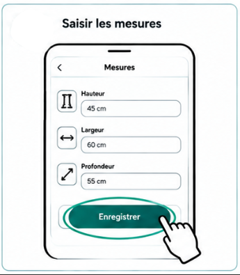
🖼️ Image 16 — Les 4 champs de mesure, deux en violet « connu (Airtable) », bouton « Confirmer les valeurs connues », bouton « Valider les mesures » en bas.6.4 État 📋
Une réponse par question, en touchant un gros bouton : Aspect (esthétique) et Fonctionnement. Par défaut, « Bon » et « Non testé » sont présélectionnés (« · par défaut ») : changez-les si besoin. Ajoutez un commentaire atelier si utile (défaut, rayure, pièce manquante…), puis Valider l’état.
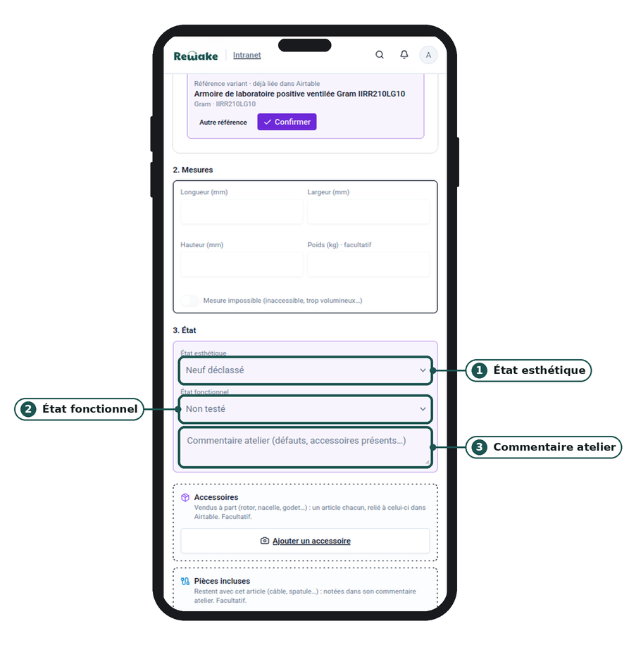
Image 17 — ① État esthétique · ② État fonctionnel · ③ Commentaire atelier. (Ancienne interface.)6.5 Accessoires et pièces incluses (facultatif)
La plupart des produits n’en ont pas : ignorez ce paragraphe dans ce cas.
Quoi |
Exemples |
Où l’ajouter |
|---|---|---|
🧩 Accessoire |
rotor, nacelle, adaptateur, godet |
Un produit à part (vendu séparément), avec ses propres photos, n° de série, référence, mesures, état. |
🔌 Pièce incluse |
câble, spatule, plaque de calibration |
Juste un nom, noté sur ce produit (dans le commentaire atelier envoyé à Airtable). |
Ajouter un accessoire : dans la liste des produits, touchez ＋ Ajouter un produit imprévu → Un accessoire → choisissez le produit avec lequel il a été trouvé (« Avec quel produit ? »). La caméra s’ouvre : faites-le comme un produit normal.
Ajouter une pièce incluse : à l’étape État, encadré Pièces incluses, tapez le nom puis Ajouter.
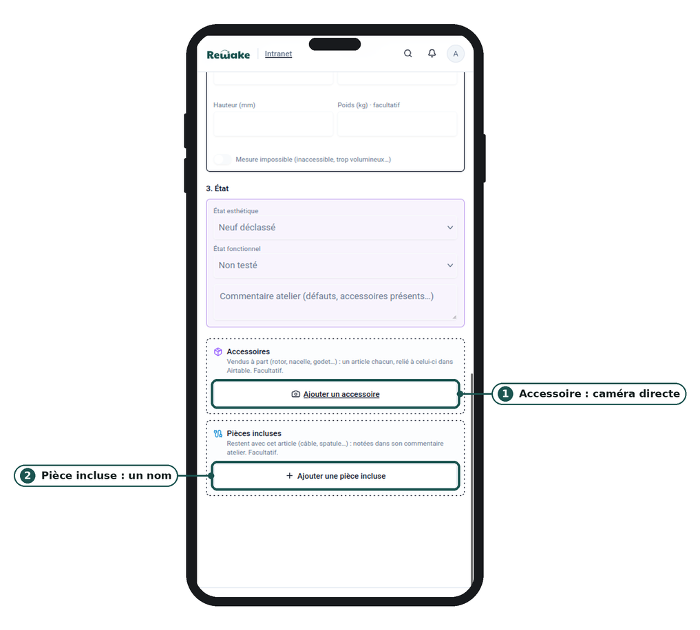
Image 18 — ① Accessoire : caméra directe · ② Pièce incluse : un nom. (Ancienne interface.)ℹ️ Le lien « cet accessoire va avec cet appareil » est ajouté tout seul dans Airtable (table Compatibilité) dès que les deux ont leur référence.
7. Produit complet → produit suivant
Quand les 5 étapes sont faites, l’écran Produit complet s’affiche avec le résumé de chaque étape (touchez une étape pour la modifier, ou Photos pour reprendre une photo).
Touchez Produit suivant : … pour enchaîner, ou Retour à la liste.
Le produit est envoyé tout seul dans Airtable : son unité est créée (ou, pour une unité de la reprise, complétée) avec la référence, le n° de série, les états, le commentaire atelier et toutes les photos (« Photos interne »). Dans la liste, il affiche Envoi dans Airtable… puis Dans Airtable (lien vers l’unité). Une modification faite ensuite est renvoyée automatiquement.
« Pas encore dans Airtable » · Réessayer : l’envoi a échoué (réseau, Airtable) ; touchez Réessayer. « Modifié dans Airtable entre-temps » : quelqu’un a changé l’unité dans Airtable ; Remplacer par la réception remet les valeurs de la réception.
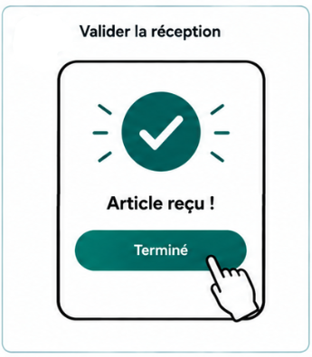
🖼️ Image 19 — Écran « Produit complet » : coche verte, les 5 étapes résumées, boutons « Produit suivant : … » et « Retour à la liste ».🔁 Et on recommence : photos → n° de série → marque et modèle → mesures → état.
8. Reprendre une réception plus tard
Pause, fin de journée, autre urgence ? Rien n’est perdu (photos, valeurs, suggestions sont enregistrées ; recharger la page ne perd rien).
Ouvrez 📦 Réception produits.
Onglet ▶ En cours : touchez Reprendre. Vous arrivez directement sur le prochain produit à faire.
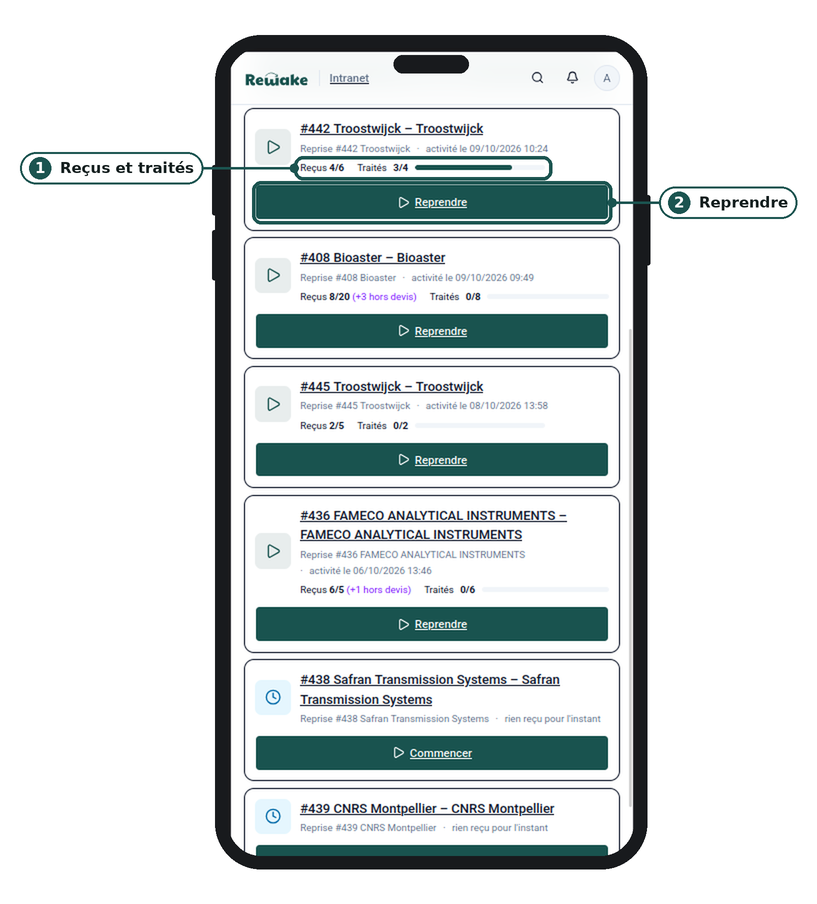
Image 20 — ① Reçus et traités · ② Reprendre.Reçus 5/8 : 5 produits reçus sur 8 attendus (« +1 hors devis » si un produit imprévu a été ajouté).
Traités 3/5 : 3 produits complets sur les 5 reçus.
9. La liste des produits de la réception
La page de la réception (✕ depuis un produit, ou le nom de la réception dans l’accueil) montre tous les produits, avec en haut x/y produit(s) complet(s) et le pourcentage d’avancement.
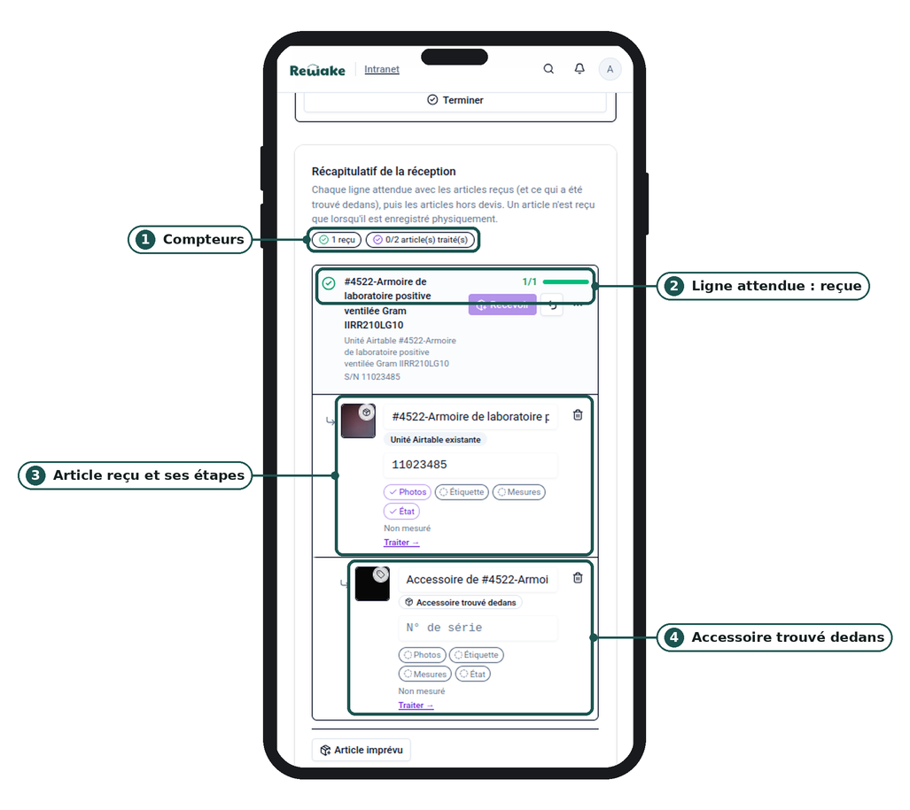
Image 21 — ① Compteurs · ② Ligne attendue : reçue · ③ Article reçu et ses étapes · ④ Accessoire trouvé dedans. (Ancienne interface.)Chaque ligne montre la photo du produit (et la vignette client : les photos envoyées par le client, à toucher pour agrandir), son nom, ses 5 étapes en petites icônes et son état dans Airtable. Touchez une ligne pour ouvrir le produit.
Sur la ligne |
Signification |
|---|---|
À recevoir · touchez pour photographier |
Attendu, pas encore reçu. |
✓ vert, bord vert |
Produit complet. |
Imprévu (violet) |
Pas sur la reprise, ajouté à la main. |
🧩 violet |
Accessoire (trouvé dans un autre produit) ; « 🧩 2 » : 2 accessoires trouvés dedans. |
Non reçu : absent de la livraison (grisé) |
Marqué « pas dans la livraison ». |
Menu ⋮ d’une ligne :
Pas dans la livraison : le produit attendu n’est jamais arrivé (Finalement reçu pour revenir en arrière).
Annuler la réception : produit reçu par erreur (ses photos et informations sont retirées ; ce qui avait été envoyé dans Airtable est défait).
Renommer / Retirer ce produit : pour un produit imprévu.
＋ Ajouter un produit imprévu : Un produit (une machine, un appareil qui n’était pas prévu) ou Un accessoire (voir § 6.5).
10. Terminer la réception
Quand tous les produits sont complets (« Tous les produits sont complets. »), touchez ✓ Terminer la réception en bas de la liste, puis Terminer.
S’il reste des produits incomplets ou non reçus, la fenêtre les liste avec ce qui manque : Compléter d’abord, ou Terminer quand même (les produits incomplets n’iront dans Airtable qu’une fois terminés).
La réception est terminée tout de suite : elle passe dans l’Historique. Les produits complets sont déjà dans Airtable : il n’y a pas d’autre étape. Besoin de corriger ? Ouvrez-la et touchez Rouvrir.
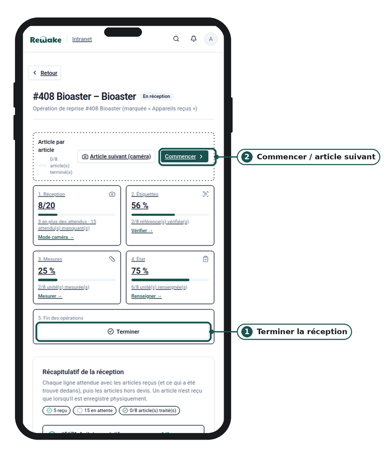
Image 22 — ① Terminer la réception · ② Commencer / article suivant. (Ancienne interface.)11. Astuces
📷 Étiquette nette = moins de saisie. Approchez-vous, évitez les reflets (inclinez légèrement le téléphone), essuyez l’étiquette si besoin.
🔢 Le n° de série est presque toujours après SN: ou S/N.
🏷️ Pas d’étiquette ? Sans étiquette, puis tapez le n° de série et cherchez la référence à la main.
🖼️ Une photo déjà prise ? Importer dans la caméra.
🔄 Une photo ratée ? Écran Produit complet → Photos → touchez la photo : la caméra s’ouvre pour cette photo seulement.
✨ Proposition bizarre ? Reprenez l’étiquette, puis Relancer.
👯 Plusieurs appareils identiques ? La référence choisie pour l’un est reportée sur les autres.
🔁 Recharger la page ne perd rien.
📶 Réseau lent ? Attendez la fin de la barre de chargement en haut avant de toucher à nouveau.
12. Problèmes fréquents
Problème |
Solution |
|---|---|
« Caméra non disponible ici » / « Accès à la caméra refusé » / « Caméra indisponible » |
Autorisez la caméra dans les réglages du navigateur, vérifiez l’adresse en https, touchez Réessayer, ou Importer une photo. |
« Lecture de l’étiquette… » ne finit pas |
Saisir sans attendre, ou Photo floue ? Reprendre l’étiquette. |
Le n° de série n’est pas trouvé |
Regardez la ligne « L’IA lit : … Utiliser », sinon tapez-le. |
« Proposition indisponible » |
Réessayer, ou Ce n’est pas proposé : chercher dans Airtable. |
Aucune référence proposée ne correspond |
Chercher dans Airtable, puis seulement si rien n’existe : créer une nouvelle référence. |
Produit reçu par erreur |
Liste → ⋮ → Annuler la réception. |
Un produit attendu n’est jamais arrivé |
Liste → ⋮ → Pas dans la livraison. |
Une étape est fausse |
Touchez l’étape en haut de l’écran du produit et corrigez. |
La reprise n’est pas dans « À réceptionner » |
Dans Airtable, Statut logistique « Appareils reçus » ; une reprise dont la réception est terminée n’y est plus (voir Historique). |
« Listes d’états indisponibles » |
Airtable injoignable : réessayez plus tard. |
« Reprises Airtable indisponibles » |
Problème de connexion avec Airtable : réessayez dans quelques minutes, prévenez l’équipe technique si cela dure. |
13. Légende des icônes et couleurs
Types de photo (en haut à droite des vignettes et dans la caméra)
Icône |
Type |
|---|---|
🏷️ étiquette |
Étiquette |
📦 boîte |
Unité entière (produit entier) |
🔌 prise |
Branchement |
▭ panneau haut |
Dessus |
▢ carré |
Face |
▯ panneau gauche / droit |
Côté gauche / droit |
↺ flèche |
Arrière |
📭 boîte ouverte |
Intérieur |
⚡ éclair |
Tension |
🖼️ image |
Autre |
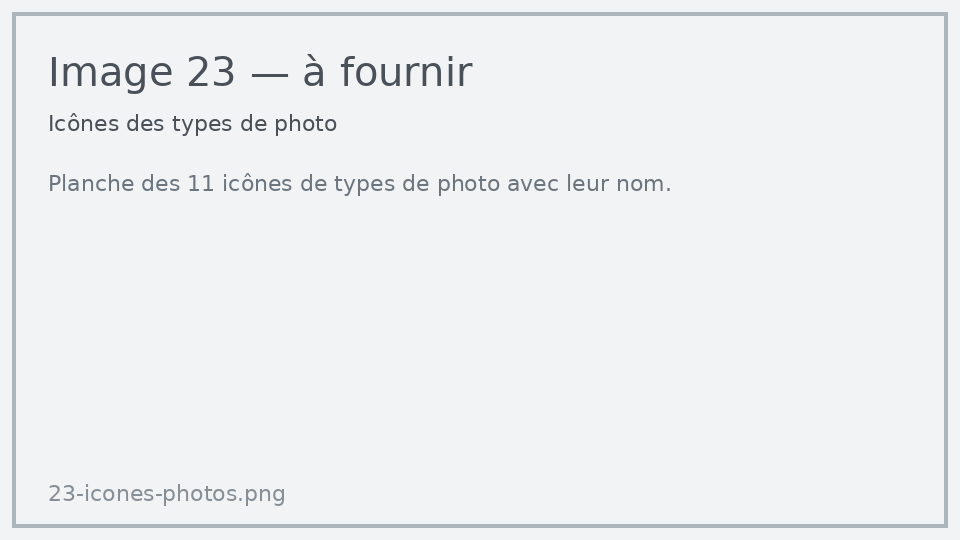
🖼️ Image 23 — Planche des 11 icônes de types de photo avec leur nom.Étapes d’un produit : 📷 Photos · 🔢 N° de série · 🗂️ Variante (marque et modèle) · 📏 Mesures · 📋 État. Pleine = faite, vide = à faire.
Accueil
Couleur |
Signification |
|---|---|
🔵 bleu ▶ |
En cours |
bleu clair 🕓 |
Ouverte, rien reçu |
🟠 orange 🚚 |
Reprise à réceptionner |
🟢 vert ✓ |
Terminée |
⚪ gris |
Annulée |